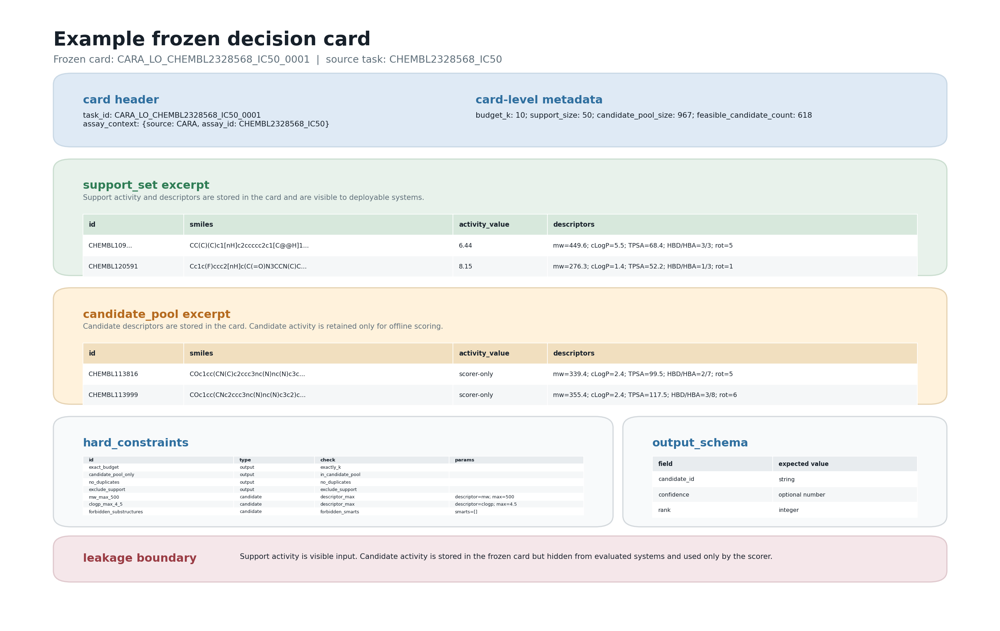
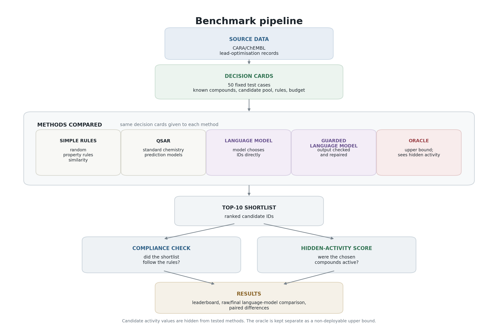
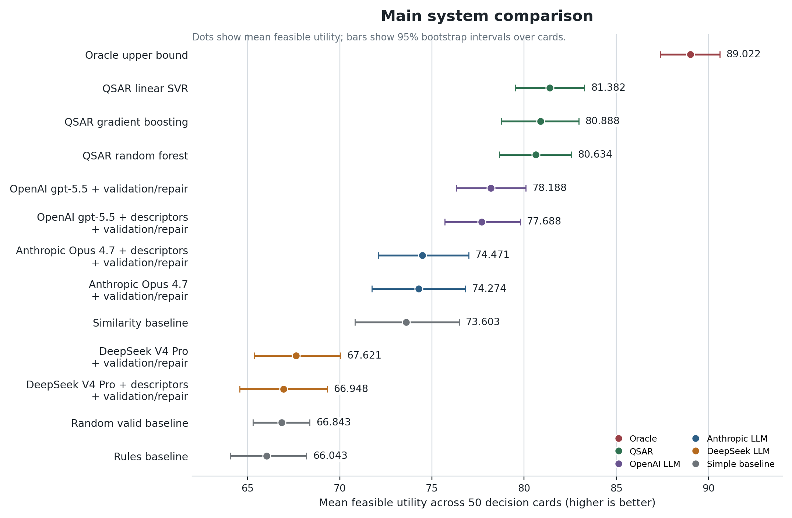
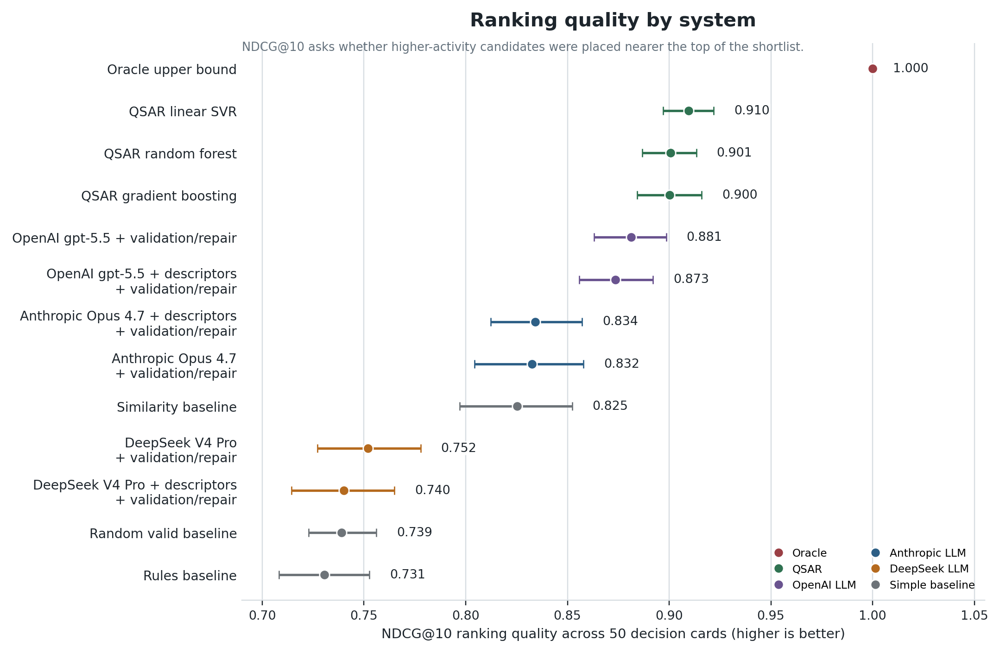
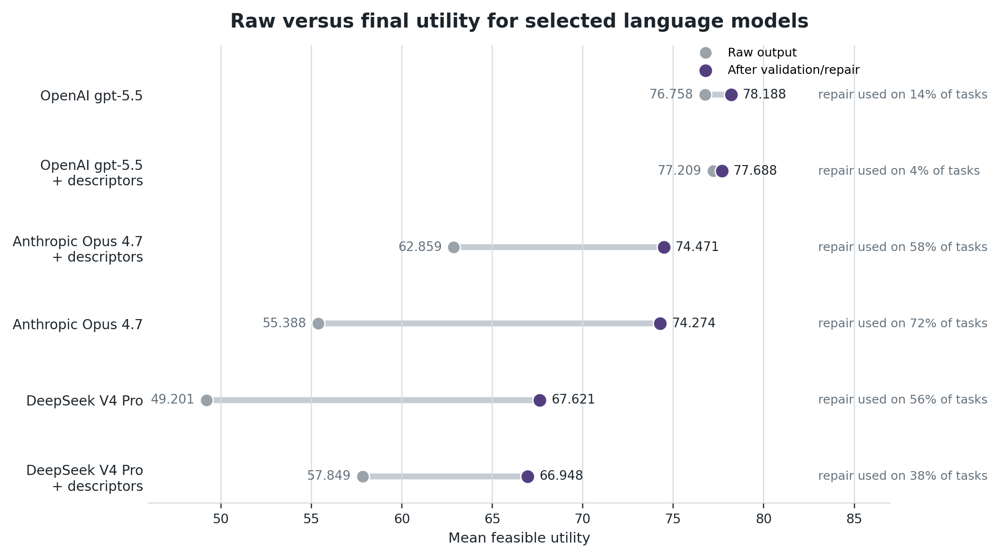
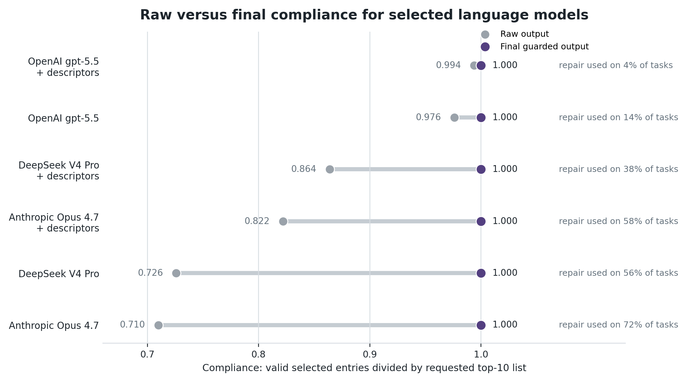
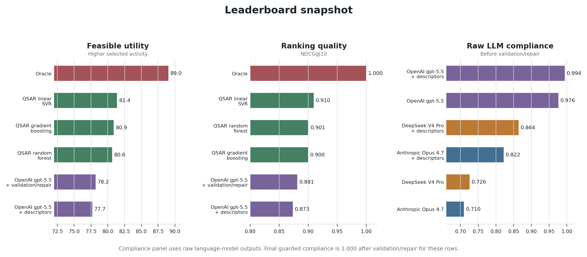
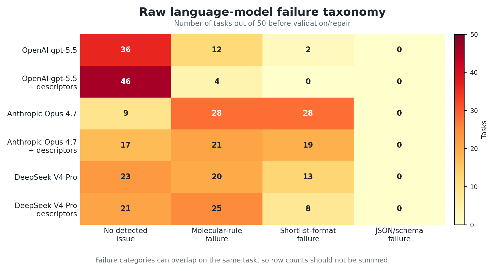

Figure and Table Review
Draft review page for the constrained lead-optimisation manuscript. Figures are working versions; captions and labels are intentionally plain-language where possible.
Figure 1. Example Frozen Decision Card

Shows what one decision card contains: known support compounds, candidate compounds, rules, budget, output schema, and scorer-only hidden activity values.
Figure 2. Benchmark Pipeline

Public CARA/ChEMBL lead-optimisation records were converted into fixed decision cards. Each method returned a top-10 shortlist, then the shortlist was checked for rule-following and hidden-activity score.
Figure 3. Main System Comparison

Mean feasible utility across the 50 cards. The oracle is an upper bound; colours separate QSAR, simple baselines, and the selected OpenAI, Anthropic, and DeepSeek language-model variants. Descriptor-enriched LLM conditions are included.
Figure 4. Ranking Quality

NDCG@10 measures whether stronger candidates were placed nearer the top of the ranked shortlist. This complements feasible utility, which scores the selected top-10 set without caring as much about the exact order within the list. Descriptor-enriched LLM conditions are included.
Figure 5. Raw Versus Final Utility

This figure shows selected conditions for each frontier language model, including versions with and without extra molecular descriptors. Raw output means the language-model response before deterministic repair. Final output means the guarded pipeline after validation and repair. "Repair used" is the percentage of the 50 tasks where repair was applied before final scoring.
Figure 6. Raw Versus Final Compliance

Final compliance reaches 1.000 because the validator/repair layer enforces the output contract. The raw compliance values show how often the model/interface already followed the rules. "Repair used" is the percentage of the 50 tasks where repair was applied before final scoring.
Figure 7. Leaderboard Snapshot

Compact summary of the leading rows for feasible utility, NDCG@10 ranking quality, and raw language-model compliance. The compliance panel uses raw language-model outputs because final guarded compliance is enforced by validation/repair.
Figure 8. Failure Taxonomy

Counts of raw language-model tasks with no detected issue, molecular-rule failures, shortlist-format failures, or JSON/schema failures before validation/repair. Categories can overlap on the same task, so counts should not be summed across a row.
Draft Tables
Table 1. Dataset Summary
| Measure | Value |
|---|---|
| Decision cards | 50 |
| Selection budget per card | 10 |
| Mean support compounds | 48.76 |
| Support compounds range | 29-50 |
| Mean candidate pool | 292.16 |
| Candidate pool range | 134-967 |
| Mean feasible candidates | 162.4 |
| Feasible candidates range | 45-618 |
| Oracle feasible utility | 89.022 |
Key Paired Differences
| Comparison | Metric | Mean delta | 95% interval |
|---|---|---|---|
| QSAR SVM minus best guarded language model | Feasible utility | 3.194 | 1.942 to 4.692 |
| QSAR SVM minus best guarded language model | NDCG@10 | 0.028 | 0.016 to 0.043 |
| Best guarded language model minus similarity baseline | Feasible utility | 4.585 | 1.941 to 7.272 |
| Best guarded language model minus rules baseline | Feasible utility | 12.145 | 10.282 to 14.056 |
Table 2. Main System Comparison
| System | Feasible utility | NDCG@10 | Output handling |
|---|---|---|---|
| Oracle upper bound | 89.022 | 1.000 | Uses hidden activity; not deployable |
| QSAR linear SVR | 81.382 | 0.910 | Ranks prefiltered feasible candidates |
| QSAR gradient boosting | 80.888 | 0.900 | Ranks prefiltered feasible candidates |
| QSAR random forest | 80.634 | 0.901 | Ranks prefiltered feasible candidates |
| OpenAI gpt-5.5 + validation/repair | 78.188 | 0.881 | Best final LLM row |
| OpenAI gpt-5.5 + descriptors + validation/repair | 77.688 | 0.873 | Descriptor-enriched LLM row |
| OpenAI gpt-5.5 + descriptors, raw output | 77.209 | 0.866 | Best raw LLM row |
| Similarity baseline | 73.603 | 0.825 | Ranks prefiltered feasible candidates |
| Random valid baseline | 66.843 | 0.739 | Selects only feasible candidates |
| Rules baseline | 66.043 | 0.731 | Ranks prefiltered feasible candidates |
Compliance is not shown as a single generic column in this table because it has different meanings across rows. Deterministic baselines and QSAR rank prefiltered feasible candidates, while guarded language-model rows are final outputs after validation/repair. Raw language-model compliance is shown in Figure 6 and Table 3.
Table 3. Raw Versus Final Language-Model Accounting
| System | Raw utility | Final utility | Raw compliance | Final compliance | Tasks where repair was used |
|---|---|---|---|---|---|
| OpenAI gpt-5.5 + validation/repair | 76.758 | 78.188 | 0.976 | 1.000 | 14% |
| Anthropic Opus 4.7 + validation/repair | 55.388 | 74.274 | 0.710 | 1.000 | 72% |
| DeepSeek V4 Pro + validation/repair | 49.201 | 67.621 | 0.726 | 1.000 | 56% |
| OpenAI gpt-5.5 + descriptors + validation/repair | 77.209 | 77.688 | 0.994 | 1.000 | 4% |
| Anthropic Opus 4.7 + descriptors + validation/repair | 62.859 | 74.471 | 0.822 | 1.000 | 58% |
| DeepSeek V4 Pro + descriptors + validation/repair | 57.849 | 66.948 | 0.864 | 1.000 | 38% |
All values are read from the frozen result artifacts under paper/tables/cara_lo_paper_50_direct_json_completed/.
Open Design Questions
Decide whether Figures 3 and 4 should stay separate or become a two-panel figure: feasible utility on the left, ranking quality on the right.
Decide whether Figures 5 and 6 should stay as separate panels or become a single two-panel raw/final figure: utility on the left, compliance on the right.